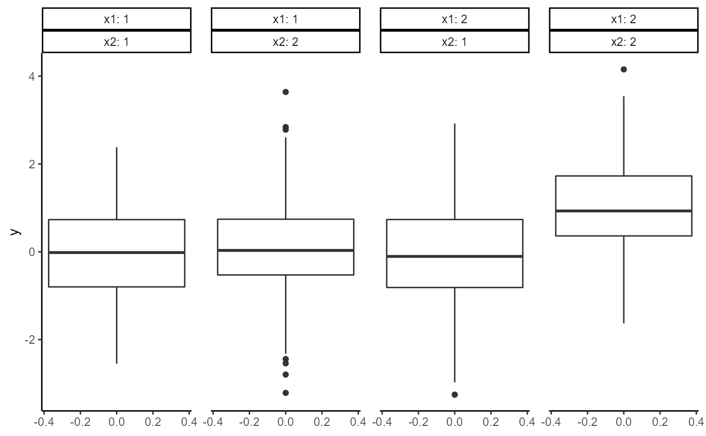
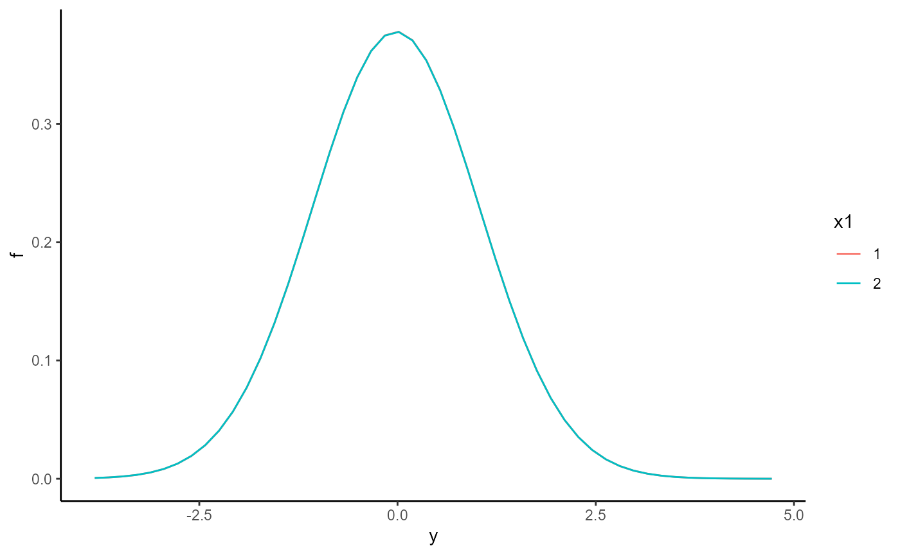
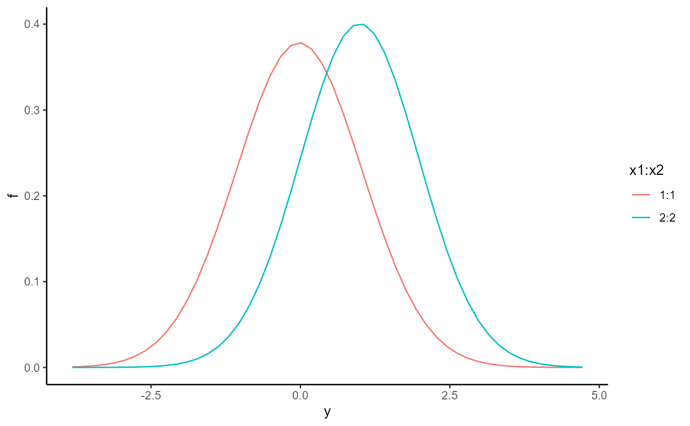

getting_started.RmdTo explore the basic capabilities of ANOVABNPTestR, we’ll use the dataset example_01. This is a simulated sample with 1.000 registers, a continuous response (y) and 2 factors (x1 and x2), where the combination x1 = x2 = 1 is the reference group.
First, let us plot a boxplot of y for each combination of x1 and x2:
ggplot(example_01, aes(y = y)) +
geom_boxplot() +
facet_wrap(
nrow = 1,
vars(x1, x2),
labeller = "label_both"
) +
theme_classic() +
theme(panel.spacing = unit(1, "lines"))
This plot suggests weak simple effects (relative to the reference group), but a strong interaction effect. However, without a formal test, we cannot be sure.
ANOVABNPTestR aims to provide tools for testing the existence of simple and interaction effects, using a flexible Bayesian model.
First, we need to train the model. As our response takes values on the real line, we should use anova_bnp_normal() (see anova_bnp_poisson() for counts and anova_bnp_bernoulli() for Boolean variables):
yvec <- example_01[[1]]
Xmat <- example_01[, 2:3] |> as.matrix()
fit <- anova_bnp_normal(yvec, Xmat)Once the model is trained, we can test for simple effects using hypothesis_post_simple():
hypothesis_post_simple(fit)
#> # A tibble: 2 x 2
#> var1 prob
#> <chr> <dbl>
#> 1 x1 0.0075
#> 2 x2 0.002In this tibble, var1 specifies the factor into consideration, and prob is the posterior probability of having a simple effect for that factor. As prob is always low, there is little support for simple effects.
In a similar, we can test for interaction effects using hypothesis_post_interaction():
hypothesis_post_interaction(fit)
#> # A tibble: 1 x 3
#> var1 var2 prob
#> <chr> <chr> <dbl>
#> 1 x1 x2 1In this tibble, var1 and var2 specify the interaction into consideration, and prob is the posterior probability of having a simple effect for that interaction. As prob nearly 1, there is a great support for an interaction effect.
In addition to the main tests functions, ANOVABNPTestR can also plot the posterior predictive density (ppd) of the response under some common scenarios. For example, the function predictive_plot_simple() displays the ppd for each level of a particular factor, while setting the other factors at their reference level.
predictive_plot_simple(fit, 1) +
theme_classic()
As you can see, there is nearly no difference between the group distributions, in agreement with the output of our tests.
In a similar way, the function predictive_plot_interaction() displays the ppd for each level of a particular interaction, while setting the other factors at their reference level.
predictive_plot_interaction(fit, 1, 2) +
theme_classic()
As you can see, there is marked difference between the group distributions, again in agreement with the output of our tests.